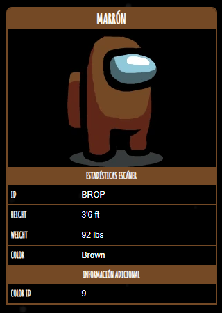

Marrón

Marrón
es uno de los
colores
de
Among Us
que los jugadores pueden personalizar.
Curiosidades
El Marrón rara vez se utiliza en material promocional.
En la sección "Cómo jugar", se muestra a Marrón completando una tarea.